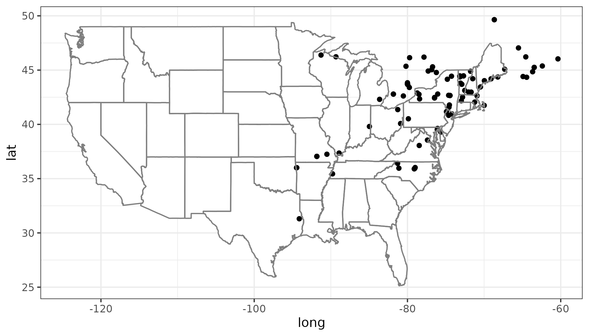
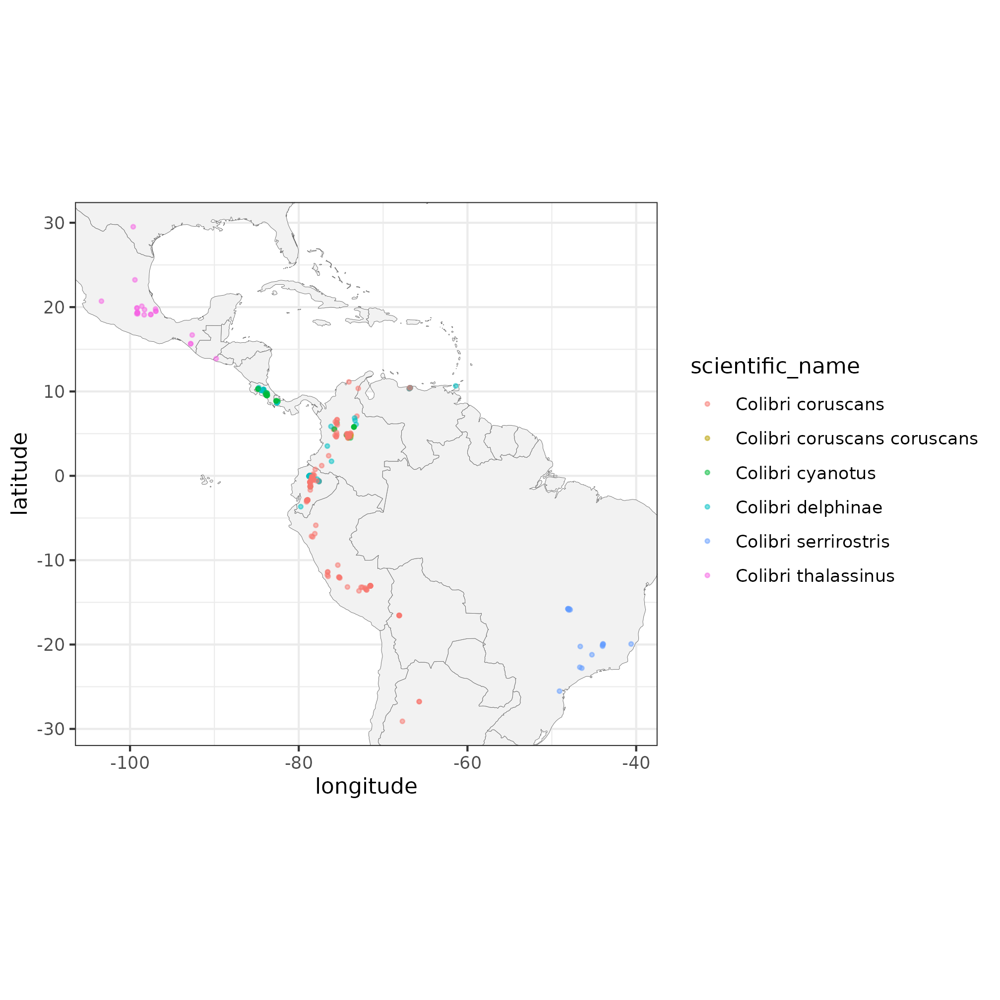

Access iNaturalist data through APIs
Edmund Hart, Stéphane Guillou
2021-07-13
Source:vignettes/rinat-intro.Rmd
rinat-intro.RmdAbout
rinat is a wrapper for iNaturalist APIs for accessing the observations. The detailed documentation of the API is available on the iNaturalist website and is part of our larger species occurrence searching packages SPOCC.
Quickstart guide
Get observations
Fuzzy search
You can search for observations by either common or scientific name. It will search the entire iNaturalist database, so the search below will return all entries that mention Monarch butterflies, not just entries for Monarchs.
library(rinat)
butterflies <- get_inat_obs(query = "Monarch Butterfly")Another use for a fuzzy search is searching for a common name or habitat, e.g. searching for all observations that might happen in a vernal pool. We can then see all the species names found.
vp_obs <- get_inat_obs(query = "vernal pool")
head(vp_obs$species_guess)## [1] "blue water-speedwell"
## [2] "grasses, sedges, cattails, and allies"
## [3] "common bird's nest fungus"
## [4] "mosses"
## [5] "Tree Frogs and Allies"
## [6] "plantain family"Taxon query
To return only records for a specific species or taxonomic group, use the taxon option.
## Return observations in the family Nymphalidae, for 2015 only
nymphalidae <- get_inat_obs(taxon_name = "Nymphalidae", year = 2015)
## Return just Monarch Butterfly records, all years
monarchs <- get_inat_obs(taxon_name = "Danaus plexippus")Bounding box search
You can also search within a bounding box by giving a simple set of coordinates.
## Search by area
bounds <- c(38.44047, -125, 40.86652, -121.837)
deer <- get_inat_obs(query = "Mule Deer", bounds = bounds)
plot(deer$longitude, deer$latitude)Other functions
Get information and observations by project
You can get all the observations for a project if you know its ID or name as an iNaturalist slug.
## Just get info about a project
vt_crows <- get_inat_obs_project("crows-in-vermont", type = "info", raw = FALSE)## 202 records
## Now get all the observations for that project
vt_crows_obs <- get_inat_obs_project(vt_crows$id, type = "observations")## 202 records## Getting records 0-200## Getting records up to 400## Done.## Note: mismatch between number of observations reported and returned by the API.Get observation details
Detailed information about a specific observation can be retrieved by observation ID. The easiest way to get the ID is from a more general search.
m_obs <- get_inat_obs(query = "Monarch Butterfly")
head(get_inat_obs_id(m_obs$id[1]))## $id
## [1] 86826299
##
## $observed_on
## [1] "2021-07-02"
##
## $description
## NULL
##
## $latitude
## [1] "33.4457593647"
##
## $longitude
## [1] "-117.6013751328"
##
## $map_scale
## NULLGet all observations by user
If you just want all the observations by a user you can download all their observations by user ID. A word of warning though, this can be quite large (easily into the 1000’s).
user_obs <- get_inat_obs_user(m_obs$user_login[1], maxresults = 20)
head(user_obs)[,1:5]## scientific_name datetime description
## 1 Geococcyx californianus 2021-07-07 15:35:20 -0700
## 2 Danaus plexippus 2021-07-02 14:46:24 -0700
## 3 Aeonium arboreum 2021-06-29 12:46:21 -0700
## 4 Cornu aspersum 2021-06-29 12:45:06 -0700
## 5 Bauhinia 2021-06-27 12:46:23 -0700
## 6 Mesembryanthemum cordifolium 2021-07-01 17:31:38 -0700
## place_guess latitude
## 1 San Clemente, CA 92672, USA 33.43598
## 2 Orange County, US-CA, US 33.44576
## 3 Orange County, US-CA, US 33.44579
## 4 Rancho San Clemente, San Clemente, CA, USA 33.44574
## 5 San Clemente, CA 92673, USA 33.44262
## 6 San Clemente, CA 92672, USA 33.41105Stats by taxa
Basic statistics are available for taxa counts by date, date range, place ID (numeric ID), or user ID (string). Only the top 5 species are listed.
## By date
counts <- get_inat_taxon_stats(date = "2020-06-14")
counts$total## [1] 25253
### Top 5 species
counts$species_counts## count taxon.id taxon.name taxon.rank taxon.rank_level
## 1 339 48484 Harmonia axyridis species 10
## 2 328 52821 Achillea millefolium species 10
## 3 320 56057 Leucanthemum vulgare species 10
## 4 317 51875 Trifolium pratense species 10
## 5 303 55745 Trifolium repens species 10
## taxon.default_name.id taxon.default_name.name taxon.default_name.is_valid
## 1 89147 Asian Lady Beetle TRUE
## 2 942097 common yarrow TRUE
## 3 924783 oxeye daisy TRUE
## 4 942055 red clover TRUE
## 5 943715 white clover TRUE
## taxon.default_name.lexicon taxon.default_name.taxon_id
## 1 English 48484
## 2 English 52821
## 3 English 56057
## 4 English 51875
## 5 English 55745
## taxon.default_name.created_at taxon.default_name.updated_at
## 1 2010-02-17T12:47:07.000Z 2020-04-19T20:53:55.647Z
## 2 2017-08-07T02:40:53.003Z 2019-09-17T18:12:58.008Z
## 3 2017-06-08T19:00:12.460Z 2018-01-10T00:03:27.724Z
## 4 2017-08-07T01:27:15.421Z 2018-01-02T15:59:53.501Z
## 5 2017-08-13T16:25:49.758Z 2019-12-25T11:01:09.924Z
## taxon.default_name.creator_id taxon.default_name.position
## 1 357 0
## 2 516268 0
## 3 498994 17
## 4 516268 0
## 5 516268 0
## taxon.default_name.parameterized_lexicon
## 1 english
## 2 english
## 3 english
## 4 english
## 5 english
## taxon.image_url
## 1 https://static.inaturalist.org/photos/30978499/square.jpg?1549228178
## 2 https://inaturalist-open-data.s3.amazonaws.com/photos/4902/square.jpg?1545379591
## 3 https://inaturalist-open-data.s3.amazonaws.com/photos/71002344/square.jpg?1588538022
## 4 https://upload.wikimedia.org/wikipedia/commons/thumb/a/ae/Trifolium_pratense_-_Keila2.jpg/75px-Trifolium_pratense_-_Keila2.jpg
## 5 https://inaturalist-open-data.s3.amazonaws.com/photos/64586855/square.jpeg?1585208221
## taxon.iconic_taxon_name taxon.conservation_status_name
## 1 Insecta <NA>
## 2 Plantae <NA>
## 3 Plantae <NA>
## 4 Plantae least_concern
## 5 Plantae <NA>
### Most common taxon ranks
counts$rank_counts## $species
## [1] 18516
##
## $genus
## [1] 3634
##
## $subspecies
## [1] 713
##
## $family
## [1] 615
##
## $subfamily
## [1] 363
##
## $tribe
## [1] 336
##
## $variety
## [1] 216
##
## $subgenus
## [1] 137
##
## $order
## [1] 129
##
## $superfamily
## [1] 89
##
## $hybrid
## [1] 82
##
## $subtribe
## [1] 79
##
## $section
## [1] 73
##
## $complex
## [1] 58
##
## $class
## [1] 40
##
## $suborder
## [1] 33
##
## $infraorder
## [1] 27
##
## $phylum
## [1] 23
##
## $subclass
## [1] 17
##
## $form
## [1] 13
##
## $subsection
## [1] 8
##
## $subphylum
## [1] 7
##
## $infraclass
## [1] 5
##
## $kingdom
## [1] 5
##
## $genushybrid
## [1] 3
##
## $subterclass
## [1] 3
##
## $superorder
## [1] 3
##
## $zoosection
## [1] 3
##
## $epifamily
## [1] 2
##
## $zoosubsection
## [1] 2Stats by user
Similar statistics can be gotten for users. The same input parameters can be used.
## By date
counts <- get_inat_user_stats(date = "2010-06-14")
counts$total## [1] 293
counts$most_observations[1:10,]## count user.id user.login user.name
## 1 129 245282 hughmcguinness Hugh McGuinness
## 2 53 811118 sandbankspp
## 3 34 541847 billhubick Bill Hubick
## 4 31 6930 tgosliner Terry Gosliner
## 5 30 46945 abe T. Abe Lloyd
## 6 26 280446 mtjones Mike Jones
## 7 25 761669 kathleenfspicer <NA>
## 8 21 2616 alice_abela Alice Abela
## 9 21 495266 maxa11an Max Allan Niklasson
## 10 20 922078 hakai470 ES470: Hakai Institute
## user.user_icon_url
## 1 https://static.inaturalist.org/attachments/users/icons/245282/thumb.jpg?1475532481
## 2 https://static.inaturalist.org/attachments/users/icons/811118/thumb.jpeg?1535236899
## 3 https://static.inaturalist.org/attachments/users/icons/541847/thumb.jpg?1582771190
## 4 https://static.inaturalist.org/attachments/users/icons/6930/thumb.jpg?1475530872
## 5 https://static.inaturalist.org/attachments/users/icons/46945/thumb.jpg?1624289207
## 6 https://static.inaturalist.org/attachments/users/icons/280446/thumb.jpg?1598408556
## 7 <NA>
## 8 https://static.inaturalist.org/attachments/users/icons/2616/thumb.jpg?1475528533
## 9 https://static.inaturalist.org/attachments/users/icons/495266/thumb.jpeg?1579782546
## 10 <NA>
counts$most_species[1:10,]## count user.id user.login user.name
## 1 89 245282 hughmcguinness Hugh McGuinness
## 2 47 811118 sandbankspp
## 3 25 6930 tgosliner Terry Gosliner
## 4 24 46945 abe T. Abe Lloyd
## 5 24 761669 kathleenfspicer <NA>
## 6 17 2616 alice_abela Alice Abela
## 7 17 495266 maxa11an Max Allan Niklasson
## 8 17 541847 billhubick Bill Hubick
## 9 15 280446 mtjones Mike Jones
## 10 15 1426686 taimyr Игорь Поспелов
## user.user_icon_url
## 1 https://static.inaturalist.org/attachments/users/icons/245282/thumb.jpg?1475532481
## 2 https://static.inaturalist.org/attachments/users/icons/811118/thumb.jpeg?1535236899
## 3 https://static.inaturalist.org/attachments/users/icons/6930/thumb.jpg?1475530872
## 4 https://static.inaturalist.org/attachments/users/icons/46945/thumb.jpg?1624289207
## 5 <NA>
## 6 https://static.inaturalist.org/attachments/users/icons/2616/thumb.jpg?1475528533
## 7 https://static.inaturalist.org/attachments/users/icons/495266/thumb.jpeg?1579782546
## 8 https://static.inaturalist.org/attachments/users/icons/541847/thumb.jpg?1582771190
## 9 https://static.inaturalist.org/attachments/users/icons/280446/thumb.jpg?1598408556
## 10 https://static.inaturalist.org/attachments/users/icons/1426686/thumb.jpg?1560925189
## By place_ID
vt_crows <- get_inat_obs_project("crows-in-vermont", type = "info", raw = FALSE)## 202 records
place_counts <- get_inat_user_stats(place = vt_crows$place_id)
place_counts$total## [1] 14654
place_counts$most_observations[1:10,]## count user.id user.login user.name
## 1 70319 12158 erikamitchell Erika Mitchell
## 2 38858 2179 charlie Charlie Hohn
## 3 19218 12610 susanelliott Susan Elliott
## 4 11092 12045 larry522 Larry Clarfeld
## 5 9360 108365 judywelna
## 6 9212 6624 joannerusso
## 7 9165 12036 zaccota Zac Cota
## 8 9054 171529 nsharp Nathaniel Sharp
## 9 8910 317 kpmcfarland Kent McFarland
## 10 8883 13355 beeboy Spencer Hardy
## user.user_icon_url
## 1 https://static.inaturalist.org/attachments/users/icons/12158/thumb.jpg?1586465563
## 2 https://static.inaturalist.org/attachments/users/icons/2179/thumb.jpg?1569109298
## 3 https://static.inaturalist.org/attachments/users/icons/12610/thumb.jpg?1475533475
## 4 https://static.inaturalist.org/attachments/users/icons/12045/thumb.jpg?1475533238
## 5 https://static.inaturalist.org/attachments/users/icons/108365/thumb.jpg?1475547470
## 6 https://static.inaturalist.org/attachments/users/icons/6624/thumb.jpeg?1562532360
## 7 https://static.inaturalist.org/attachments/users/icons/12036/thumb.jpg?1475533232
## 8 https://static.inaturalist.org/attachments/users/icons/171529/thumb.jpg?1544399969
## 9 https://static.inaturalist.org/attachments/users/icons/317/thumb.jpg?1475527502
## 10 https://static.inaturalist.org/attachments/users/icons/13355/thumb.jpg?1475533838
place_counts$most_species[1:10,]## count user.id user.login user.name
## 1 3100 12158 erikamitchell Erika Mitchell
## 2 2388 12610 susanelliott Susan Elliott
## 3 2292 12045 larry522 Larry Clarfeld
## 4 1963 2179 charlie Charlie Hohn
## 5 1783 6624 joannerusso
## 6 1773 13355 beeboy Spencer Hardy
## 7 1602 2860446 er-birds
## 8 1524 11792 kylejones Kyle Jones
## 9 1505 171529 nsharp Nathaniel Sharp
## 10 1482 317 kpmcfarland Kent McFarland
## user.user_icon_url
## 1 https://static.inaturalist.org/attachments/users/icons/12158/thumb.jpg?1586465563
## 2 https://static.inaturalist.org/attachments/users/icons/12610/thumb.jpg?1475533475
## 3 https://static.inaturalist.org/attachments/users/icons/12045/thumb.jpg?1475533238
## 4 https://static.inaturalist.org/attachments/users/icons/2179/thumb.jpg?1569109298
## 5 https://static.inaturalist.org/attachments/users/icons/6624/thumb.jpeg?1562532360
## 6 https://static.inaturalist.org/attachments/users/icons/13355/thumb.jpg?1475533838
## 7 https://static.inaturalist.org/attachments/users/icons/2860446/thumb.jpg?1588019864
## 8 https://static.inaturalist.org/attachments/users/icons/11792/thumb.jpg?1475533125
## 9 https://static.inaturalist.org/attachments/users/icons/171529/thumb.jpg?1544399969
## 10 https://static.inaturalist.org/attachments/users/icons/317/thumb.jpg?1475527502Mapping
Basic maps can be created as well to quickly visualize search results. Maps can either be plotted automatically with plot = TRUE (the default), or simply return a ggplot2 object with plot = FALSE. This works well with single species data, but more complicated plots are best made from scratch.
library(ggplot2)
## Map 100 spotted salamanders
a_mac <- get_inat_obs(taxon_name = "Ambystoma maculatum")
salamander_map <- inat_map(a_mac, plot = FALSE)
### Now we can modify the returned map
salamander_map + borders("state") + theme_bw()
## A more elaborate map of Colibri sp.
colibri <- get_inat_obs(taxon_name = "Colibri",
quality = "research",
maxresults = 500)
ggplot(data = colibri, aes(x = longitude,
y = latitude,
colour = scientific_name)) +
geom_polygon(data = map_data("world"),
aes(x = long, y = lat, group = group),
fill = "grey95",
color = "gray40",
size = 0.1) +
geom_point(size = 0.7, alpha = 0.5) +
coord_fixed(xlim = range(colibri$longitude, na.rm = TRUE),
ylim = range(colibri$latitude, na.rm = TRUE)) +
theme_bw()